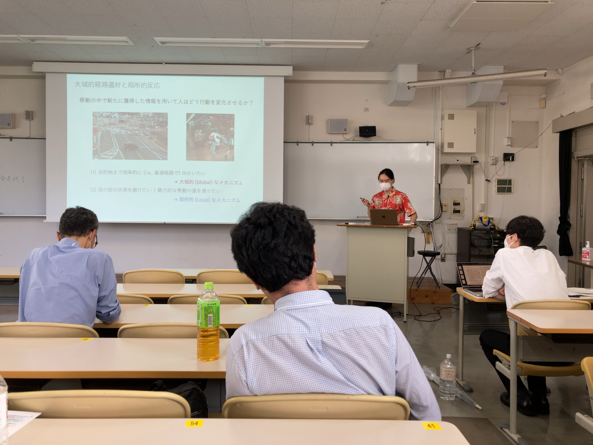

News | ニュース
土木計画学秋大会@琉球大学,沖縄
11月12日(土),13日(日)に琉球大学千原キャンパスにて開催された第66回土木計画学研究発表会に参加しました. 本研究室からは,大山,村上(M2),松村(M1)が以下の題目にて発表しました．
1. 大域的経路選好と局所的反応を考慮したネットワーク行動モデル(大山雄己)
2. 市街地交通ネットワークにおける歩行者ゾーンの最適設計(村上颯一朗・大山雄己)
3. 容量制約付きネットワークにおける逐次予約型MaaSの課金方策の検討(松村健太・大山雄己・福田大輔)
学生は初めての対面での学会参加で緊張しましたが,他大学の学生の発表を聞くことは今後の研究を進める上で良い刺激になりました.
それぞれの発表に対して,質疑・コメントいただいた皆様,ありがとうございました.この場をお借りしてお礼申し上げます.
発表後は，首里城周辺を散策しました．石垣やシーサーといった沖縄ならではの街並みは歩いていてとても楽しかったです．
今後の学会で地方に行った際もその街ならではの風土や魅力を体験できたらいいなと思います．
(文責/M2:村上)
